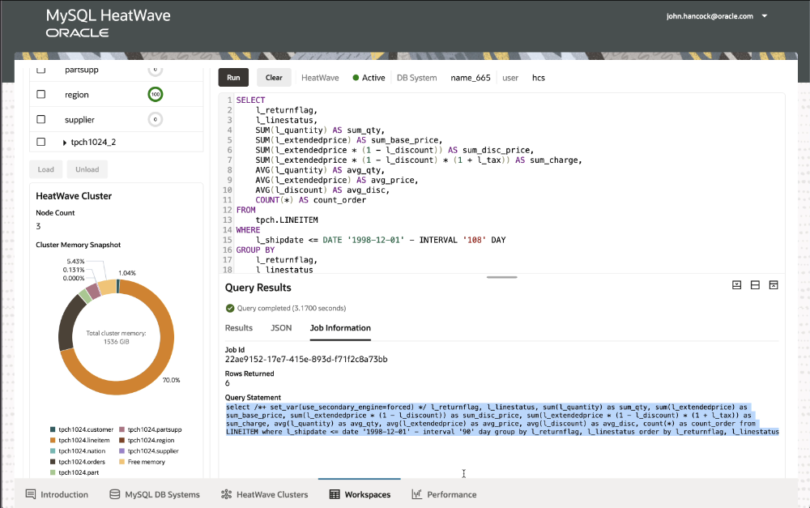
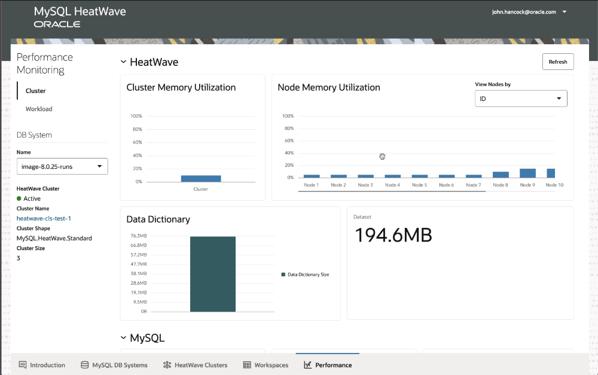
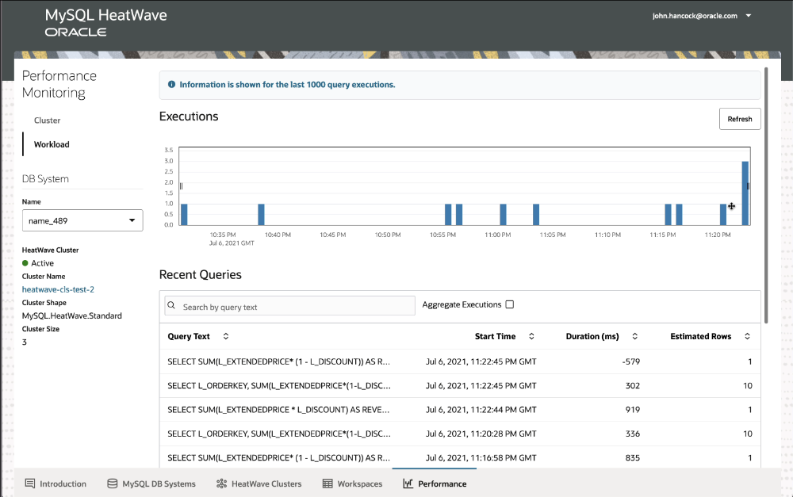
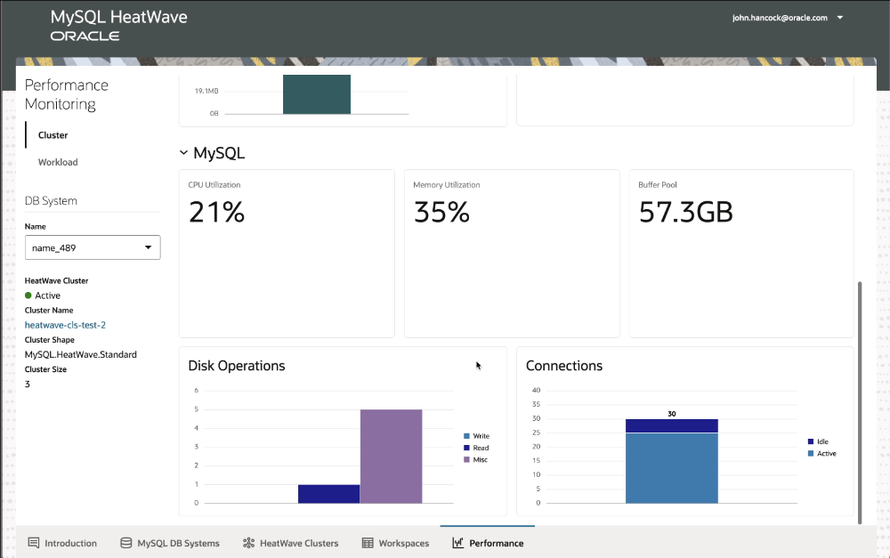

<div class="initial-content">
  <div id="main" role="main">

  <article class="page has-sidebar" itemscope itemtype="https://schema.org/CreativeWork">
    <meta itemprop="headline" content="HeatWave on AWS Metrics and Performance Tools">
    
    <meta itemprop="datePublished" content="2022-06-16T17:00:00+00:00">
    


    <header>
      <h1 id="page-title" class="page__title" itemprop="headline">HeatWave on AWS Metrics and Performance Tools
</h1>
      


    </header>

    <section class="page__content" itemprop="text">
      

        <p>As you’re working with your data, you’ll want to check out the performance of MySQL HeatWave on AWS, and we provide a number of metrics for you to examine.</p>

<h3 id="heatwave-cluster-workspaces">HeatWave Cluster Workspaces</h3>

<picture class="">
                <source srcset="assets/hwaws-query_already_run-devrel0622.png 1x" />
                
            </picture>

<p>Above, we see the Workspaces tab in the Console, having just run a query. While we see a memory snapshot, we can go deeper in the Performance tab.</p>

<h3 id="performance">Performance</h3>

<picture class="">
                <source srcset="assets/hw_performance_monitoring-devrel0622.png 1x" />
                
            </picture>

<p>Here’s the good stuff! Not only can you see performance per node, you can see the size of the dataset, the data dictionary, and if you click on Workload on the left side, you’ll see duration each step of the query took, and when queries have taken place.</p>

<picture class="">
                <source srcset="assets/hw_performance_monitoring_03-devrel0622.png 1x" />
                
            </picture>

<p>Clicking back on Cluster and scrolling down, we can see metrics related to the VM itself, including memory and connection usage, CPU, and so on. If you’re keen on squeezing every drop of performance that you can out of HeatWave on AWS, we got you.</p>

<picture class="">
                <source srcset="assets/hw_performance_monitoring_02-devrel0622.png 1x" />
                
            </picture>

<p>Want to know more? Join the discussion in our <a href="https://bit.ly/devrel_slack">public Slack channel</a>!</p>


          <div class="sidebar sticky">
    <!-- <p><strong>Tags:</strong> <span class="tags">

            
            <a class="animated-link tag" href="/topics/mysql">mysql</a>
            <a class="animated-link tag" href="/topics/database">database</a>
            <a class="animated-link tag" href="/topics/heatwave">heatwave</a>
            </span>
    </p> -->
  


<div itemscope itemtype="https://schema.org/Person">

  

  <div class="author__content">
    
      <h3 class="author__name" itemprop="name"></h3>
    
    
  </div>

  <div class="author__urls-wrapper">
    <ul class="author__urls social-icons">
      

      

      

      

      

      

      

      

      

      

      

      

      

      

      

      

      

      

      

      

      

      

      

      

      

      

      
    </ul>
  </div>
</div>

  
  
  

  </div>


      </section>

      <footer class="page__meta">
        
        


        

  <p class="page__date"><strong><i class="fas fa-fw fa-calendar-alt" aria-hidden="true"></i> Updated:</strong> <time datetime="2022-06-16T17:00:00+00:00">June 16, 2022</time></p>


      </footer>
    </div>

  </article>
</div>

</div>

